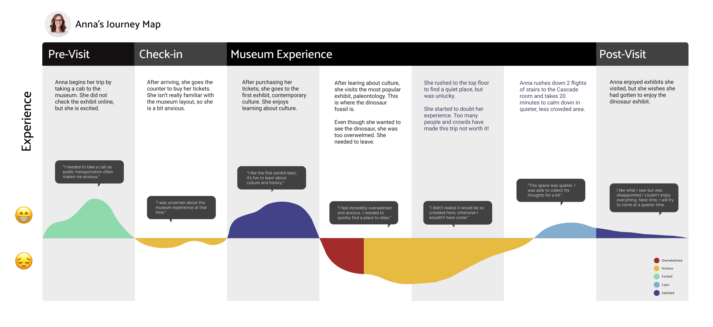
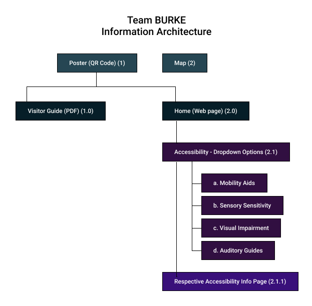

The Burke Museum of Natural History and Culture is a place of history, inspiration, and knowledge. It promotes diversity, inclusion, and equity, by preserving history of marginalized communities within our society. Although the museum was newly built in 2019, there were accessibility concerns that weren’t addressed properly. As part of an upper-level HCDE undergraduate coursework, we undertook the mission of designing a better experience for disabled museumgoers whose accessibility needs weren’t met.
Guiding Questions:
Insights:
Based on our research, we developed the following personas...
We created a journey map based on Anna’s persona, which helps us review our ideas to find more possibilities in improving the user experience with our design.
To design the experience illustrated in our storyboard, we developed an information architecture plan to plan out the process in our museum redesign experience.
Below are some low and high fidelity prototypes representing the physical experience of viewing accessibility information at the museum.
Key Design Changes:
Through our project, we learned the design process and we also developed some key insights on collaboration and communication. Through user interviews and secondary research, we realized that there was a greater need for accessibility features to be communicated to those who had sensory sensitivities.
There were some points in our process where we had to rethink whether some design features were necessary and feasible. If we had more time, we would probably go back and add a feature that allows users through sort through all the exhibits to only see non-busy exhibits. Also, because of time constraints, we were unable to do user testing with the users who had accessibility needs, which affected the end result of our product.
Overall, we learned how to prioritize user needs and balance those with time and technical constraints. We couldn’t tackle every problem, but communicated and collaborated through design decisions to make the most feasible, usable product we could.